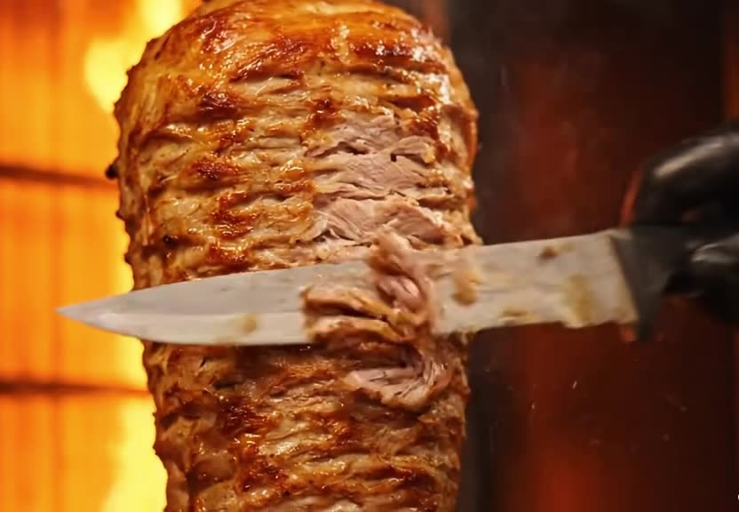

Kebap Sandwich
Saftiges Fleisch frisch vom Spieß im Fladenbrot – mit Salat und Soße nach Wahl.
7,70 €Große Hamkenstraße 21 · Osnabrück
Türkische Spezialitäten & vegane Highlights – frisch vom Spieß, mitten in der Osnabrücker Innenstadt. Seit über zehn Jahren.
Mo–Do 10–23 · Fr–Sa 10–24 · So 12–22 Uhr
Über uns
Am 1. April 2015 haben wir in der Großen Hamkenstraße – nur ein paar Schritte von der Kamp-Promenade – unseren Spieß zum ersten Mal angeworfen. Seitdem ist „Zum Drehspieß“ für viele in Osnabrück die feste Adresse für ehrlichen Döner, Dürüm, Lahmacun, Pide und Pizza.
Inhaber Davud Kücükugurlu erfindet den Laden immer wieder neu: Wir waren die Ersten in Osnabrück, die Döner auch als vegane Variante auf Seitan-Basis und als Sucuk-Döner angeboten haben. Und es geht weiter – zuletzt mit Döner im Broich-Brot und unseren neuen Burgern.

Unsere Lieblinge
Vom Klassiker im Fladenbrot bis zur Pizza mit Pommes drauf – das sind die Gerichte, für die man zu uns kommt.
Saftiges Fleisch frisch vom Spieß im Fladenbrot – mit Salat und Soße nach Wahl.
7,70 €Zartes Dönerfleisch mit Tomatensoße – von den FoodBroz zum Highlight ihres Besuchs gekürt.
Preis im LadenUnser Pionier: veganer Döner auf Seitan-Basis, frisch vom eigenen Spieß.
8,70 €Kebap, Pommes, Tomaten, Zwiebeln und Sauce Hollandaise – alles auf einer Pizza.
12,00 €Unser Lahmacun in vegan – mit Seitan-Belag statt Hackfleisch, dünn und knusprig.
8,50 €Knusprig außen, saftig innen – diese Kombo kannte hier noch keiner.
Jetzt probierenVegan & vegetarisch
Wir waren die Ersten in Osnabrück mit veganem Döner – und 2019 wurde er zum besten veganen Döner der Stadt gekürt.
Außerdem: vegane Pizza, vegane Döner-Pizza und vegane Currywurst mit Pommes.
Alle veganen GerichtePresse & Stimmen
Osnabrücks Nummer 1 für Döner! 🥙🔥 … wenn ihr auf der Suche nach außergewöhnlichem Döner seid, ist dieser Laden ein absolutes Muss! Hier trifft Qualität auf Geschmack.
Insta & News
Neue Gerichte, Aktionen und alles rund um den Laden – zuerst auf Instagram.
„Döner trifft Broich Brot 🥖🔥 Knusprig außen, saftig innen – diese Kombo kannte hier noch keiner.“
„Döner können wir. Jetzt zeigen wir euch, was wir noch können.“ – unsere neuen Burger sind da.
Zum Jubiläum gab es jedes Döner-Sandwich – klassisch, Veggie oder Hähnchen – für nur 3 €. Schon zum Start um 12 Uhr stand eine lange Schlange vor der Tür. Danke für zehn Jahre!
Bericht auf HASEPOST →Zur Heim-EM haben wir versprochen: Wird Deutschland Europameister, kostet jedes Döner-Sandwich am Tag nach dem Finale 5 € – holt die Türkei den Titel, sogar nur 1 €.
Bericht auf HASEPOST →Besuch uns
In der Großen Hamkenstraße, gleich bei der Kamp-Promenade. Komm vorbei, ruf an oder bestell online.
Öffnungszeiten
| Montag | 10:00 – 23:00 |
| Dienstag | 10:00 – 23:00 |
| Mittwoch | 10:00 – 23:00 |
| Donnerstag | 10:00 – 23:00 |
| Freitag | 10:00 – 24:00 |
| Samstag | 10:00 – 24:00 |
| Sonntag | 12:00 – 22:00 |
An Feiertagen können die Zeiten abweichen.
Große Hamkenstraße 21
49074 Osnabrück